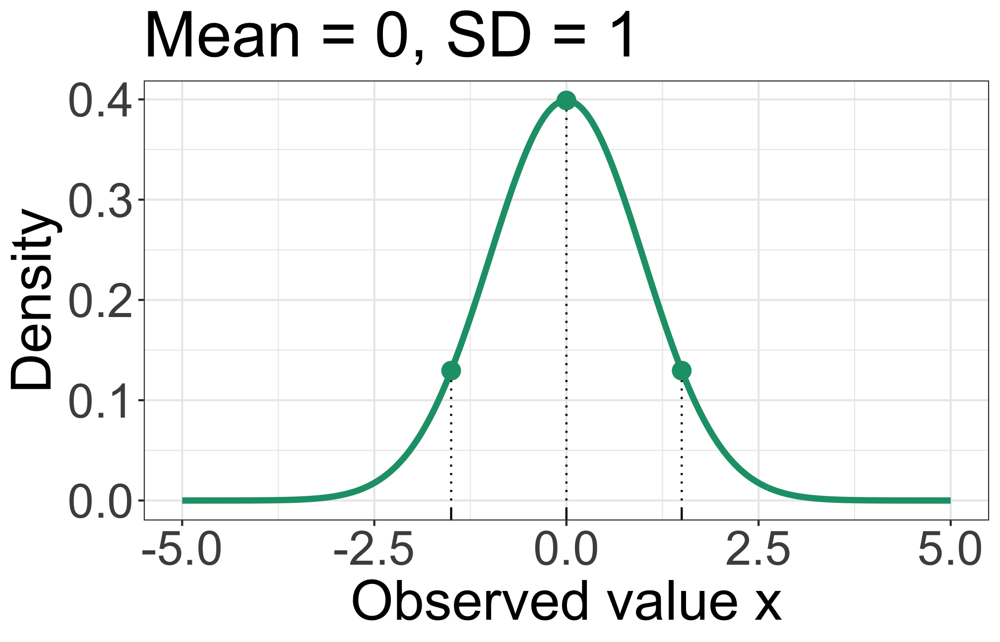
Bayesian statistics for ecology
Day 1: From likelihood to posterior
AFEC-X 2026 · 21 October
🧑🏻💻 Masatoshi Katabuchi @ XTBG, CAS
Course map
Day 1
Bayesian foundations
- Likelihood
- Bayes’ theorem
- Prior and posterior
- Posterior samples and summaries
Day 2
Regression and model checking
- Seedling survival and CNDD
- Posterior prediction
- Did the model and the computation work?
Day 3
Hierarchical models
- Partial pooling
- Mother trees and information sharing
- Workflow for real ecological data
- Each day: short lectures + one exercise in the browser-based R environment.
- The goal is to explain Bayesian ideas, read figures and connect models to ecological questions.
- Day 1: calculate a posterior directly. Days 2–3: use supplied posterior draws. The instructor may demonstrate live sampling.

Conspecific negative density dependence (CNDD)
“…rare species suffered more from the presence of conspecific neighbors than common species did, suggesting that conspecific density dependence shapes species abundances in diverse communities.”
- Comita et al. 2010 -
Our question: does conspecific density affect survival differently among species?
Where we are going: by Day 3, we can describe the model structure behind this question.
Today’s question: the smallest version

We planted 5 seedlings. One year later, 2 are alive.
- What is the survival probability p of this species?
- How sure are we?
- Would we be equally sure with 40 survivors out of 100?
One species, no predictor, one parameter. We start with this simple model of one survival probability. On Day 2, survival probability depends on conspecific density. On Day 3, survival rates vary among mother trees and species.
Today’s objectives
Understanding Bayesian thinking
- Explain how the prior and likelihood combine to give the posterior.
- Describe how the data and prior affect the estimate and its uncertainty.
Likelihood
Normal model: from parameters to data
\boxed{f(\text{data}\mid\text{parameters})} \qquad \text{e.g.}\quad\operatorname{Normal}(x_i\mid\mu,\sigma)
Probability density of the data given the parameters.
Three observations: x=\{-1.5,\;0,\;1.5\}.
- How high is the curve at each observed value?
- For continuous data, this height is a probability density.
Normal model: from data to likelihood
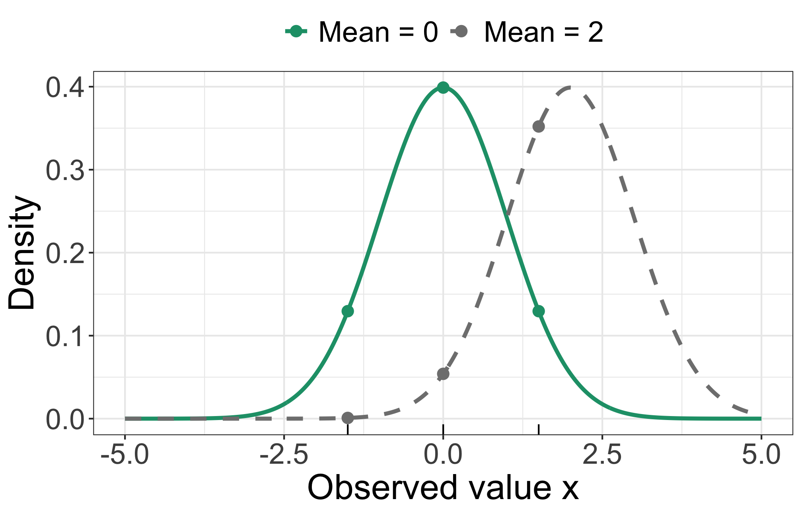
Keep the observations and \sigma=1 fixed.
- Choose a mean \mu and multiply the three densities.
- Change \mu: the curve shifts and the product changes.
- This product as a function of \mu is the likelihood L(\mu).
L(\mu)=f(-1.5\mid\mu,1)\,f(0\mid\mu,1)\,f(1.5\mid\mu,1)
Which fits better: \mu=0 or \mu=2?
Compare the two means in R
Keep x=\{-1.5,\;0,\;1.5\} and \sigma=1 fixed. Change only the mean.
log=TRUE returns log densities. Their sum is the log-likelihood.
Mean = 0
[1] -5.006816Which value is larger? Mean = 0 fits these data better.
Taking logs preserves the ordering: larger likelihood, larger log-likelihood.
Log-likelihood as a function of \mu
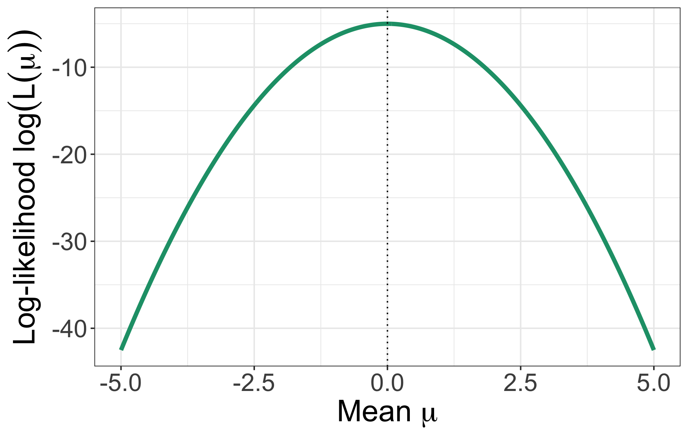
With the data and \sigma=1 fixed, plot \log L(\mu) as a function of the parameter \mu.
The log-likelihood is highest at \mu=0.
Binomial MLE: back to the seedlings
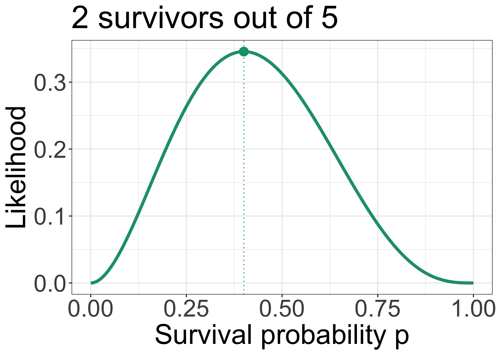
We return to two survivors out of five.
- Now compare survival probabilities p instead of Normal means \mu.
- The maximum is at p=0.4.
- This is the maximum likelihood estimate (MLE).
L(p)=\operatorname{Binomial}(2\mid5,p)=\binom{5}{2}p^2(1-p)^3 \qquad \hat{p}_{\mathrm{MLE}}=\frac{2}{5}=0.4
Conditional Probability and Bayes’ Theorem
Conditional Probability
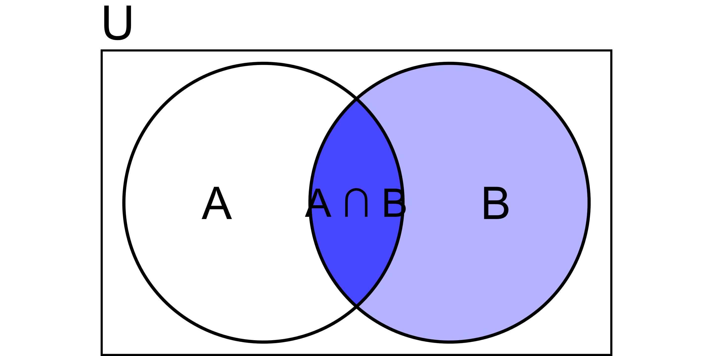
Probability of A occurring given B has already occurred:
P(A \mid B) = \frac{P(A \cap B)}{P(B)}
e.g.,
- P(hangover) = 4%
- P(baijiu) = 1.5%
- P(hangover | baijiu) = 85%.
Bayes’ Theorem
P(B \mid A) = \frac{P(A \cap B)}{P(A)}
P(A \mid B) = \frac{P(A \cap B)}{P(B)}
P(A \mid B) \times P(B) = P(B \mid A) \times P(A)
P(A \mid B) = \frac{P(B \mid A) \times P(A)}{P(B)}
Why is this useful?
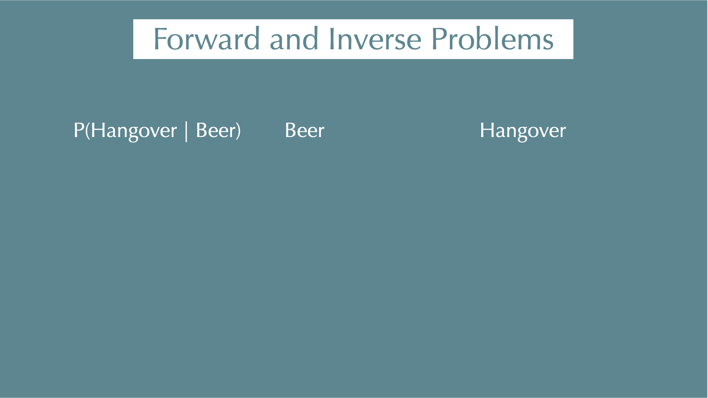
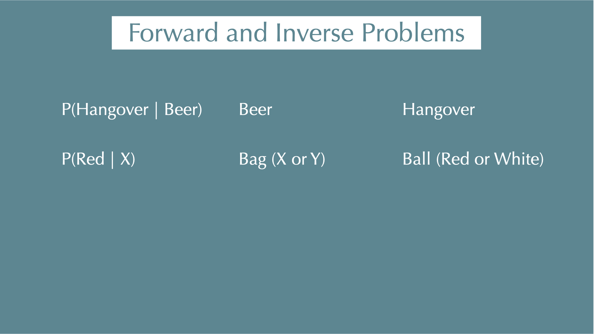
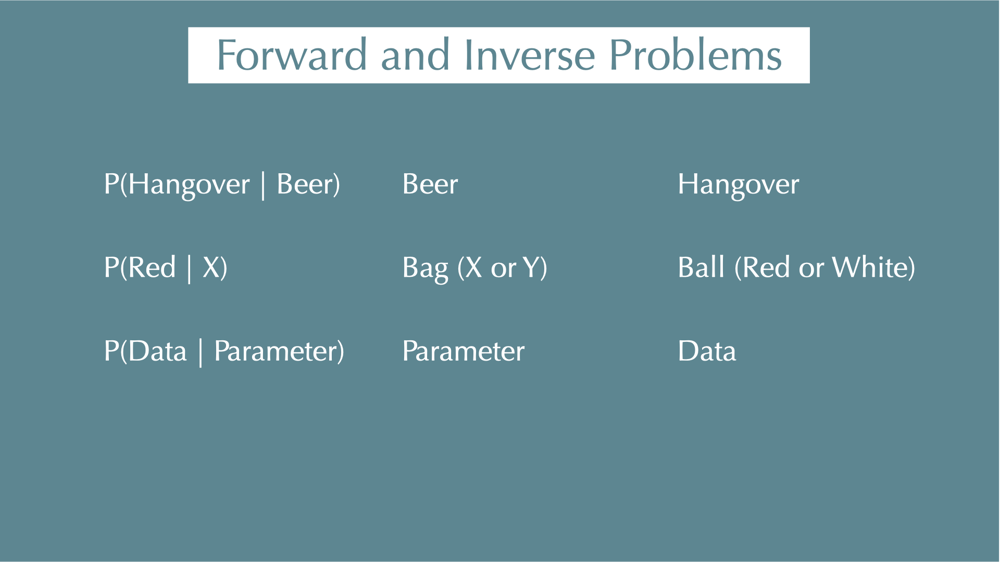
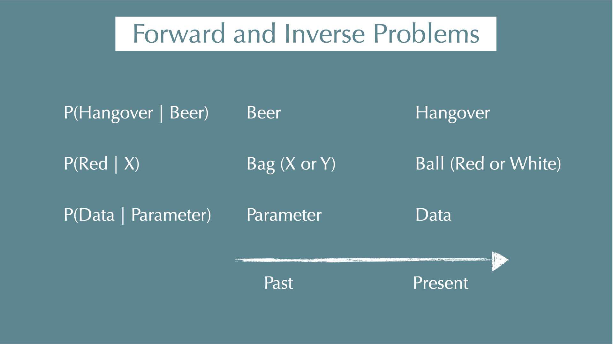
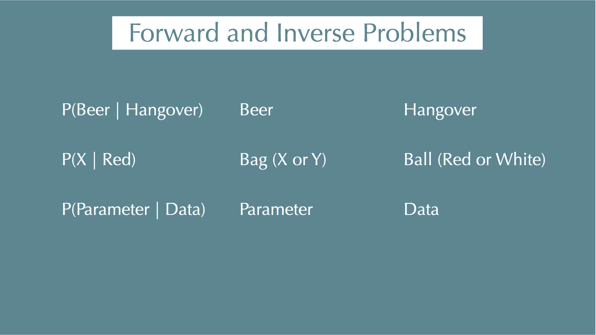
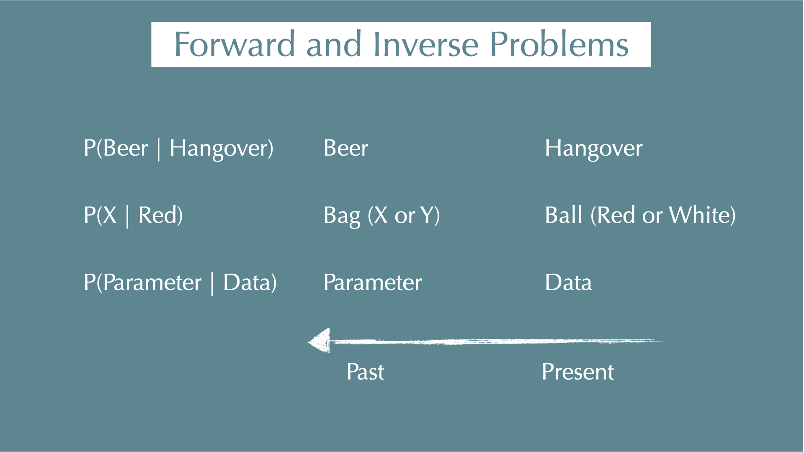
Bayes’ theorem
\textcolor{#d95f02}{ P(\mathrm{Parameter} \mid \mathrm{Data}) } = \frac{ \textcolor{#1b9e77} { P(\mathrm{Data} \mid \mathrm{Parameter}) } \times \textcolor{#7570b3} { P(\mathrm{Parameter})} } {P(\mathrm{Data})}
\textcolor{#d95f02}{P(\mathrm{Parameter} \mid \mathrm{Data})}
- What we want to estimate (posterior): When we got our data, what were the parameters behind the data (e.g., survival probability, coefficients of regressions)?
\textcolor{#1b9e77}{P(\mathrm{Data} \mid \mathrm{Parameter})}
- When we know our parameters, what is the probability of getting our data? (i.e., likelihood)
\textcolor{#7570b3}{P(\mathrm{Parameter})}
- What we assume about the parameter before we see the data (i.e., prior).
P(\mathrm{Data})
- Does not depend on the parameters (i.e., a constant)
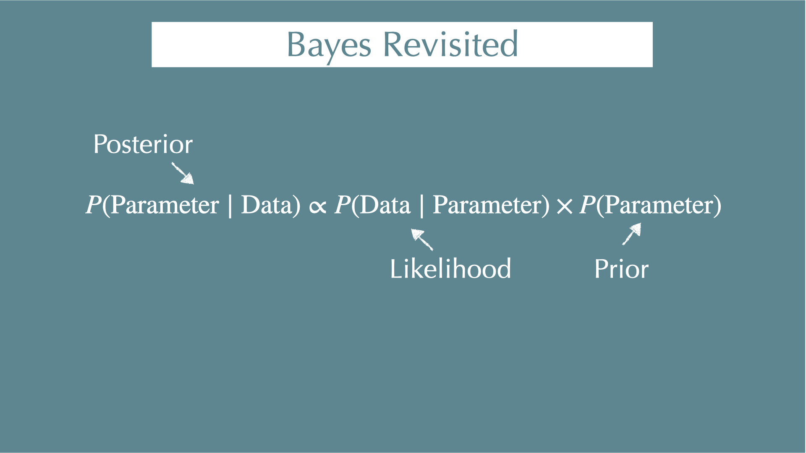
Prior and posterior
Seedlings again: posterior \propto prior × likelihood
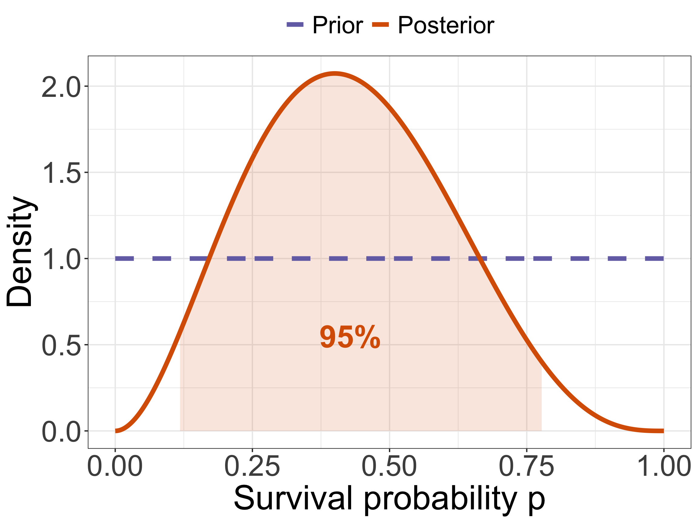
Likelihood:
2 survivors out of 5
y \sim \operatorname{Binomial}(5,p)
Prior:
All values of p are equally plausible.
p \sim \operatorname{Beta}(1,1)
Posterior:
Posterior \propto Prior \times Likelihood
p\mid y \sim \operatorname{Beta}(3,4)
Posterior mean: 0.43
Peak: 0.4 (= MLE)
95% credible interval: [0.12, 0.78]
Prior vs. Data: MLE and Bayesian Inference
A: 3 heads out of 5 tosses → MLE = 0.6
B: 60 heads out of 100 tosses → MLE = 0.6
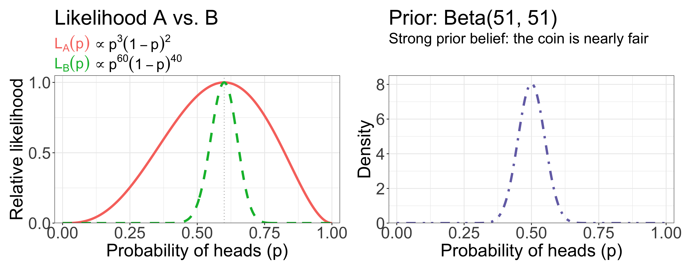
Bayesian updating: More data, less infulence from the prior
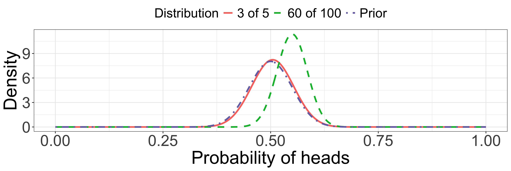
Post A (5 tosses): The prior has a stronger influence, so the posterior stays close to the prior.
Post B (100 tosses): The data have more influence, shifting the posterior toward 0.6.
Exercise: calculate a seedling posterior
day1/exercise-student.qmd
- Choose a small survey and a larger survey, both with survival proportion 0.4.
- Predict the difference, then calculate a posterior for each survey.
- Compare the plots and explain the uncertainty in survival probability.
The prior stays flat. Changing the prior is an optional extension.
Many values, one posterior distribution
Back to 2 survivors out of 5, with the same Beta(1,1) prior.
| p |
|---|
| 0.616 |
| 0.607 |
| 0.607 |
| 0.246 |
… 4000 values of p
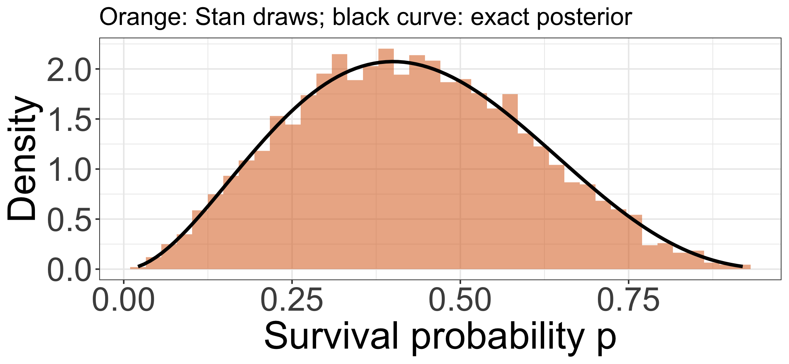
Together, the values describe uncertainty about the survival probability.
Summarise the values
The mean summarises location; the interval summarises uncertainty about p.
Summary of Day 1
- Likelihood: how probable are the data for given parameter values.
- Bayes’ theorem turns this around: posterior \propto likelihood \times prior.
- The posterior is a distribution. We summarise it with a mean and an interval.
- The influence of a fixed prior depends on the information in the data.
- Posterior draws let us calculate means and intervals.
Day 2: does survival probability change with conspecific density? We will read a fitted survival curve, make predictions and check the model.
Appendix: optional material
A Stan model = data + parameters + model
data: what we observed, and the settings of the prior- N = 5, y = 2, a = 1, b = 1
parameters: what we want to learn- p
model: prior and likelihood- p \sim \text{Beta}(a, b)
- y \sim \mathcal{B}(N, p)
Stan returns draws from the posterior of every parameter.
We pass the prior settings as data, so you can change the prior from R without touching the Stan file.
Extra columns in the Stan output
| .chain | .iteration | p |
|---|---|---|
| 1 | 1 | 0.616 |
| 1 | 2 | 0.607 |
| 1 | 3 | 0.607 |
| 1 | 4 | 0.246 |
.chain and .iteration record where each draw came from. We use this information when checking the computation.
Posterior probabilities from draws
What is the posterior probability that p > 0.5?
0.34 of the draws are above 0.5.
What the MLE does not tell us
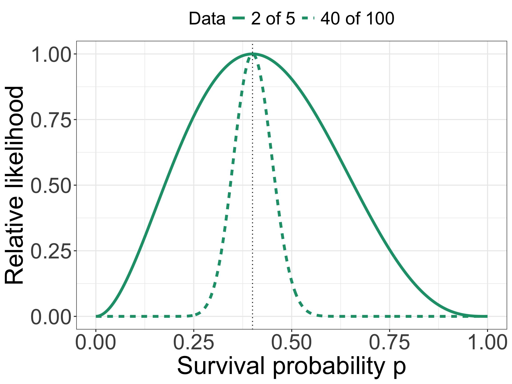
- Both data sets give the same MLE: \hat{p} = 0.4.
- With 40 of 100, the likelihood curve is narrower.
- A single number hides this uncertainty.
- What we really want: how plausible is each value of p, given the data? P(p \mid \text{data})
Forward problem: a positive PCR test
- P(\text{Positive}): 2%; P(\text{Infected}): 0.05%
If a person is infected, what is the probability that the PCR test is positive?
- P(\text{Positive} \mid \text{Infected}) = 95\%
- This is the forward problem: given infection status, predict the test result.
Inverse problem: infection after a positive test
- P(\text{Positive}): 2%; P(\text{Infected}): 0.05%
If the PCR test is positive, how likely is it that the person is infected?
- Predict before revealing the calculation.
- P(\text{Infected} \mid \text{Positive}) = \frac{P(\text{Positive} \mid \text{Infected})\,P(\text{Infected})}{P(\text{Positive})} \approx 2.4\%
- This is the inverse problem: use the result to update what we believe about infection.
Four things that are easy to mix up
| What it is | Seedlings (2 of 5, prior Beta(8, 2)) | |
|---|---|---|
| MLE | the p that maximises the likelihood | 0.4 |
| MAP | the p that maximises the posterior (its peak) | 0.692 |
| Posterior mean | the average of the posterior | 0.667 |
| Posterior distribution | every value of p with its plausibility | Beta(10, 5) |
- MLE and MAP are single numbers. They say nothing about uncertainty.
- With a flat prior, MAP = MLE. The posterior is still a distribution.
- In this course we work with the whole posterior and summarise it with a mean (or median) and an interval.
Which prior? Simulate from it
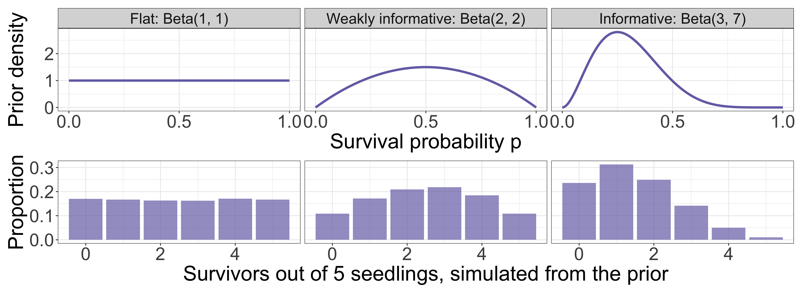
- Prior predictive check: draw p from the prior, simulate data, and ask “could data like these happen?”
- A prior is a statement about plausible data, so judge it on the scale of the data.
- In ecology we mostly use weakly informative priors: they put less prior weight on implausible parameter scales.
Extension: deriving the binomial MLE
- 2 survivors out of 5 seedlings: What is the survival probability of seedlings?
p: survival probability; 1-p: probability of dying
L = {}_5C_2 p^2(1-p)^3 (Binomial distribution)
\mathrm{ln}\;L = \mathrm{ln}\;{}_5C_2 + 2\mathrm{ln}\;p + 3\mathrm{ln}(1-p)
\frac{d}{dp}\mathrm{ln}\;L = \frac{2}{p} - \frac{3}{1-p} = 0
Solve: p = \frac{2}{5}
Extension: Normal density in R
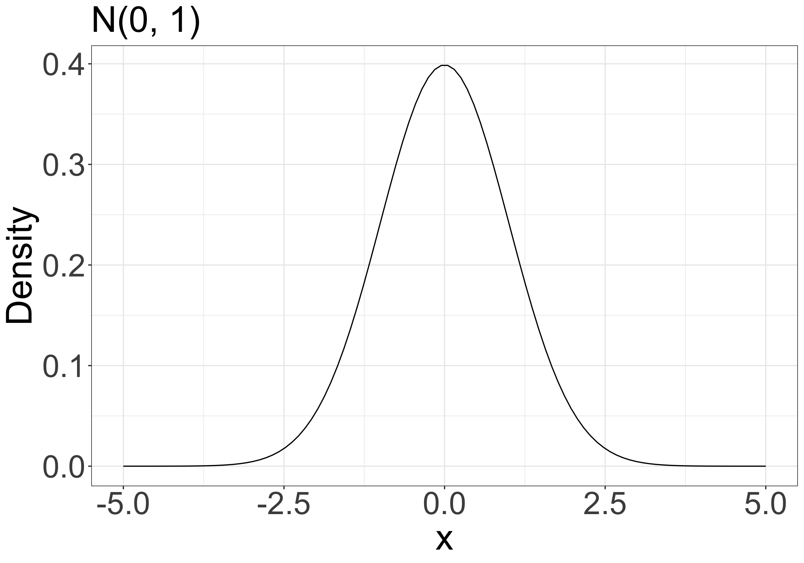
f(x \mid \mu, \sigma) = \frac{1}{\sqrt{2\pi\sigma^2}}\mathrm{exp} \bigl[{-\frac{1}{2}\bigl\{\frac{x-\mu}{\sigma}}\bigr\}^2\bigr]
For continuous data, f(\text{data}\mid\text{parameters}) gives the probability density at the observed values.
e.g., when your model is x_i \sim \mathcal{N}(\mu = 0, \sigma = 1) (normal distribution with mean 0 and standard deviation 1), what is the probability density at x = 1.96?
- A statistical model always has this form: a distribution for the data (normal, binomial, Poisson, …) with unknown parameters.
Likelihood of several observations
For independent observations x=\{-1.5,\;0,\;1.5\}, assume a Normal model with mean \mu and standard deviation 1. The likelihood is the joint probability density, viewed as a function of \mu.
- L(\mu) = f(-1.5 \mid \mu, 1) \times f(0 \mid \mu, 1) \times f(1.5 \mid \mu, 1)
- \mathrm{ln}\;L(\mu) = \mathrm{ln}\;f(-1.5 \mid \mu, 1) + \mathrm{ln}\;f(0 \mid \mu, 1) + \mathrm{ln}\;f(1.5 \mid \mu, 1)
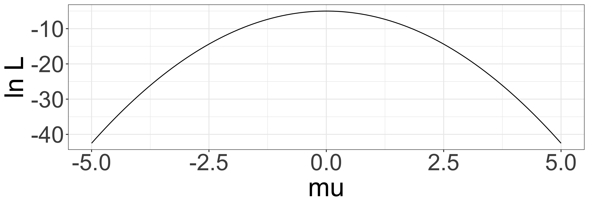
The data are fixed. The likelihood is a function of the parameter.
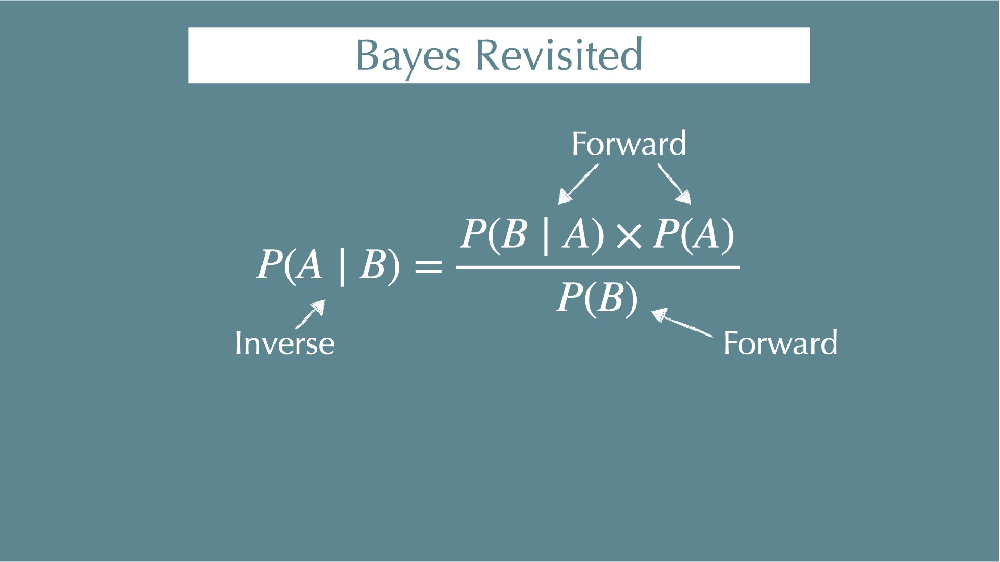
MCMC: a simplified Metropolis-Hastings (MH) algorithm


- Start with some values of p (e.g., 0.2 and 0.8).
- Calculate the posterior of those values.
- Repeat the following steps N times:
- Propose a new value of p_{\text{new}} (e.g., p \pm 0.01)
- Calculate the posterior at p_{\text{new}}.
- If \text{Post}(p_{\text{new}}) \geq \text{Post}(p_t), \text{ then } p_{t+1} = p_{\text{new}}.
- Else, accept p_{\text{new}} with probability \frac{\text{Post}(p_{\text{new}})}{\text{Post}(p_t)}.
- After the first steps (grey: warmup), the chain visits each value of p in proportion to its posterior probability.
MCMC: Hamiltonian Monte Carlo (HMC)
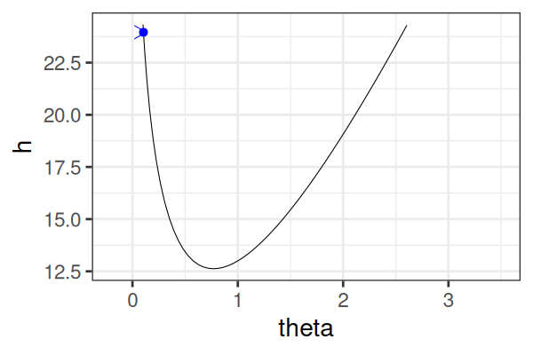
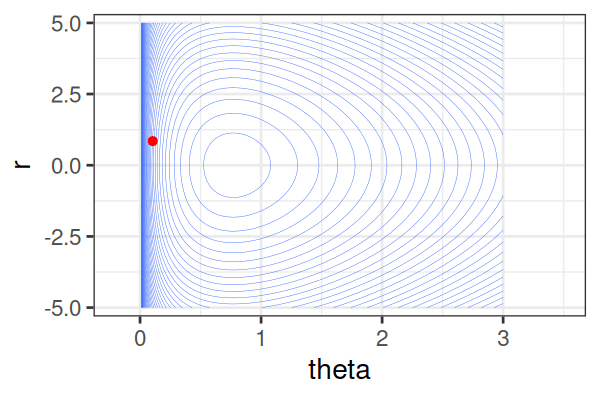
H(\theta, r) = U(\theta) + r^2/2 (Hamiltonian: potential energy + kinetic energy = constant)
- U(\theta) = -\text{log}\; p(\theta \mid \text{data})
Instead of sampling from p(\theta \mid \text{data}), HMC samples from a joint distribution over both \theta and r.
- p(\theta \mid \text{data}) \propto \int \text{exp}(-H(\theta, r))dr
It’s equivalent to sampling from p(\theta \mid \text{data}) \propto \text{exp}(-U(\theta)).
HMC explores very different \theta along the same trajectory (i.e. leapfrog path), which is much more efficient than random sampling.
MCMC: Hamiltonian Monte Carlo (HMC)
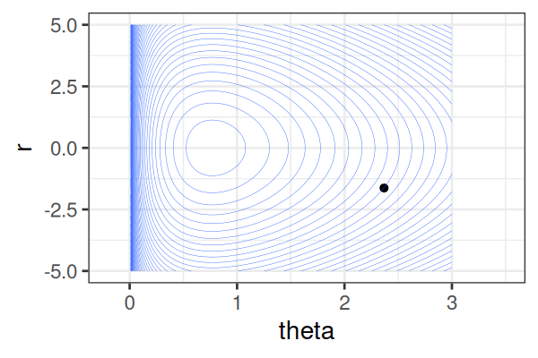
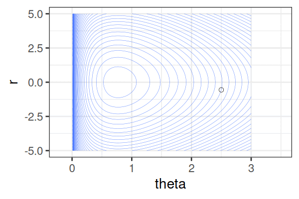
Within each iteration, HMC simulates a trajectory using leapfrog steps.
- No-U-Turn Sampler (NUTS) adapts trajectory length.
max_treedepthlimits it; Stan also has other sampler settings.
- No-U-Turn Sampler (NUTS) adapts trajectory length.
The Hamiltonian stays the same, but momentum r is resampled each iteration.
Only the final parameter \theta of each trajectory is kept as a posterior sample.
The code behind these animations: docs/hmc.qmd, R/hmc.R
MCMC Methods: Comparison
| Feature | Metropolis(-Hastings) | Gibbs Sampling | Hamiltonian Monte Carlo (HMC) |
|---|---|---|---|
| How it works | Try random moves, accept/reject | Update one parameter at a time | Simulate smooth movement using gradients |
| Efficient in high dimensions? | ❌ Often slow | ✅ If math is simple | ✅ Very efficient |
| Flexible? | ✅ Yes | Depends on available conditional updates | ✅ Yes |
| Typical software | JAGS, custom R | JAGS, BUGS | Stan |
Interfaces to Stan (for R users)
Stan: The actual modeling and inference engine, written in C++.
CmdStan: Command line interface (you write Stan code and run it via terminal).
rstan,cmdstanr: R interface to Stan/Cmdstan (you write Stan code and run it within R).brms,rstanarm: Higher-level R packages that generate and run Stan models for you (you write an R formula, without writing Stan code).In this course, we use
cmdstanrwith models that are already written.brmsversions of the same models are optional material on Days 2 and 3.
References